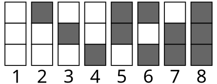
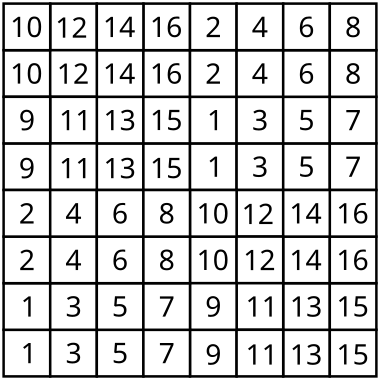

Nesta aula vamos continuar praticando as ideias da aula anterior, aplicando o princípio da casa dos pombos em problemas mais sofisticados e em alguns tipos de problemas que chamaremos de problemas de coloração.
Subseção2.2.2Problemas Resolvidos
Exemplo2.2.1.
Cada casa de um tabuleiro \(3\times 7\) é pintada de preto ou de branco. Mostre que é possível encontrar um retângulo, formado por casas do tabuleiro e com lados paralelos aos do tabuleiro original, cujas quatro casas localizadas em seus vértices tenham a mesma cor.
Cada coluna deste tabuleiro tem 3 casas e, portanto, pode ser pintada de \(2^3 = 8\) formas distintas (tipos 1 a 8).

Figura2.2.2.
Observe que, se uma coluna totalmente branca (tipo 1) for escolhida, bastaria qualquer outra coluna que tenha pelo menos duas casas brancas (tipos 2, 3 ou 4) para formar um retângulo com vértices da mesma cor. Com isso, para evitar a formação do retângulo, nos restariam apenas quatro outros tipos de pinturas para preencher as sete colunas do tabuleiro. Daí, pelo princípio da casa dos pombos, teríamos obrigatoriamente duas colunas iguais, formando o retângulo. O mesmo raciocínio ocorre se tivermos uma coluna totalmente preta (tipo 8).
Agora suponha que nenhuma das colunas seja do tipo 1 (todas brancas) ou 8 (todas pretas). Dessa forma, restariam apenas 6 tipos possíveis de pinturas para as colunas. Como o tabuleiro possui 7 colunas, pelo princípio da casa dos pombos, pelo menos duas delas seriam exatamente iguais, o que garante a existência de um retângulo com os quatro vértices da mesma cor.
Exemplo2.2.3.
(Belarus 2007 adaptado) Os pontos de um plano são pintados usando três cores. Prove que existe um triângulo isósceles monocromático.
Suponha que exista uma forma de pintar o plano de modo que não exista um triângulo isósceles monocromático. Assuma que as cores sejam verde, azul e vermelho. Construa um círculo e suponha, sem perda de generalidade, que o seu centro O seja verde. Dessa forma, pode haver no máximo um único ponto verde na circunferência, pois se houvesse dois, eles formariam com o centro um triângulo isósceles verde.
Assim, é possível construir um pentágono regular \(A_1A_2A_3A_4A_5\) inscrito neste círculo cujos vértices são todos azuis ou vermelhos. Daí, pelo princípio da casa dos pombos, existirão pelo menos três vértices do pentágono que serão da mesma cor. Como quaisquer três vértices de um pentágono regular formam sempre um triângulo isósceles, existirá um triângulo isósceles monocromático, contrariando a suposição inicial.
Exemplo2.2.4.
(Leningrado) Considere 70 inteiros positivos distintos menores ou iguais a 200. Prove que existem dois deles cuja diferença é 4, 5 ou 9.
Temos um total de 210 números distribuídos nessas três listas. Como o maior número original é no máximo 200, o maior número gerado será \(200 + 9 = 209\text{.}\) Todos os 210 números estão compreendidos entre 1 e 209 (inclusive). Portanto, pelo princípio da casa dos pombos, existirão pelo menos dois valores iguais.
Como os números dentro de uma mesma lista são sempre diferentes entre si, esses dois valores iguais devem pertencer a listas diferentes. Ao igualarmos dois termos de listas distintas, a diferença entre os elementos originais corresponderá exatamente às constantes somadas (4, 9 ou \(9 - 4 = 5\)), satisfazendo a condição do problema.
Exemplo2.2.5.
(Torneio das Cidades 1998) Em um tabuleiro \(8\times 8\text{,}\) 17 casas são marcadas. Prove que é possível escolher duas dessas casas marcadas de modo que um cavalo de xadrez leve pelo menos três movimentos para ir de uma a outra.
Pinte as casas do tabuleiro usando 16 cores (numeradas de 1 a 16) conforme um padrão onde matrizes \(4\times 4\) são repetidas ao longo do tabuleiro.

Figura2.2.6.
Justificativa formal da coloração: Para garantir o rigor na análise desta invariante, precisamos entender como a métrica do salto de cavalo opera no tabuleiro. O grafo de movimentos do cavalo é bipartido, o que significa que cada movimento sempre altera a cor da casa num padrão de xadrez tradicional (mudando a paridade da soma das coordenadas). Para retornar a uma casa da mesma cor no xadrez tradicional, o cavalo precisa de um número estritamente par de movimentos. Ao particionarmos o tabuleiro \(8\times 8\) em 16 classes de equivalência (as cores de 1 a 16, com 4 casas cada), o padrão foi construído de modo que as casas de uma mesma classe possuem a mesma paridade de coordenadas, mas estão espaçadas a uma distância euclidiana que impede que sejam conectadas por caminhos de tamanho 2. Como não podem ser alcançadas em 2 movimentos, e a invariante de paridade exige um número par de saltos para conectar casas da mesma classe, a distância mínima no grafo do cavalo entre duas casas idênticas é de, pelo menos, 4 movimentos.
Observe que para se deslocar entre duas casas de mesma cor o cavalo necessita de pelo menos três movimentos (na verdade, provamos acima que são no mínimo 4). Portanto, pelo princípio da casa dos pombos, dentre 17 casas marcadas e 16 cores disponíveis, sempre haverá pelo menos duas da mesma cor, garantindo a condição exigida.
Exemplo2.2.7.
(Teste Cone Sul) Os inteiros 1, 2, ..., 200 são divididos em 50 conjuntos. Mostre que pelo menos um desses 50 conjuntos contém três números distintos que podem ser medidas dos lados de um mesmo triângulo.
Pelo Princípio da Casa dos Pombos, dentre os 101 inteiros \(100, 101, \dots, 200\) (que estão distribuídos em 50 conjuntos), pelo menos três deles devem pertencer a um mesmo conjunto, uma vez que \(\lceil \frac{101}{50} \rceil = 3\text{.}\)
Sejam \(a < b < c\) tais inteiros encontrados no mesmo conjunto. Temos que a soma dos dois menores satisfaz a desigualdade do triângulo: \(a + b \ge 100 + 101 = 201\text{.}\) Como o maior elemento possível do conjunto é 200, temos \(201 > 200 \ge c\text{,}\) implicando que \(a + b > c\text{.}\) Portanto, \(a\text{,}\)\(b\) e \(c\) podem ser medidas dos lados de um mesmo triângulo.
Exercícios2.2.3Problemas Propostos
1.
Mostre que para todo \(n > 1\) de qualquer subconjunto de \(n+2\) elementos do conjunto \(1, 2, \dots, 3n\) podemos escolher dois cuja diferença é maior que \(n\) e menor que \(2n\text{.}\)
Vamos provar por absurdo. Seja \(A = \{x_1, x_2, \dots, x_{n+2}\}\) o subconjunto escolhido, com seus elementos ordenados de forma crescente. Suponha que não existam dois elementos em \(A\) com diferença estritamente entre \(n\) e \(2n\text{.}\) Ou seja, nenhuma diferença \(x_j - x_i\) pertence ao intervalo \([n+1, 2n-1]\text{.}\)
A diferença máxima possível entre o maior e o menor elemento de \(A\) é \(3n - 1\) (ocorre se escolhermos as extremidades \(1\) e \(3n\)). Isso implica que a diferença entre dois elementos consecutivos de \(A\) (os "saltos" \(d_i = x_{i+1} - x_i\)) deve ser sempre menor ou igual a \(n\text{.}\) Se houvesse um salto consecutivo \(d_i \ge 2n\text{,}\) a distância total \(x_{n+2} - x_1\) ultrapassaria \(3n-1\) (já que os outros \(n\) saltos medem pelo menos \(1\)), o que é impossível.
Agora, considere a diferença de todos os elementos em relação ao primeiro: \(S_k = x_{k+1} - x_1\text{.}\) Temos uma sequência crescente de \(n+1\) distâncias: \(0 < S_1 < S_2 < \dots < S_{n+1} \le 3n-1\text{.}\) Como nossa premissa exige evitar absolutamente o intervalo \([n+1, 2n-1]\text{,}\) cada valor da sequência \(S_k\) deve ficar obrigatoriamente na região \(\le n\) ou na região \(\ge 2n\text{.}\)
Se todos os \(S_k\) ficassem na região \(\le n\text{,}\) teríamos \(n+2\) elementos (contando com o próprio \(x_1\)) espremidos num intervalo numérico de tamanho máximo \(n\text{.}\) Pelo Princípio da Casa dos Pombos, pelo menos dois elementos teriam que possuir o mesmo valor, o que é um absurdo pois o conjunto exige elementos distintos. Logo, a sequência \(S_k\) precisa, em algum momento, "pular" da região \(\le n\) para a região \(\ge 2n\text{.}\)
Como vimos que o salto máximo permitido entre elementos é \(n\text{,}\) a única maneira matemática de atravessar o "buraco" proibido de \([n+1, 2n-1]\) é partindo exatamente do valor \(n\) e dando um salto exato de tamanho \(n\text{,}\) chegando cravado em \(2n\text{.}\) Isso significa que \(A\) obrigatoriamente contém os elementos \(x_1\text{,}\)\(x_1+n\) e \(x_1+2n\text{.}\) Porém, ao fixarmos esses três elementos, as opções para os demais \(n-1\) elementos ficam tão restritas para não quebrar a regra da diferença em relação a eles, que se torna impossível escolher \(n+2\) elementos distintos sem violar o intervalo proibido. Logo, a nossa suposição inicial colapsa e sempre haverá uma diferença dentro do intervalo desejado.
2.
Em uma sapataria existem 200 botas de tamanho 41, 200 botas de tamanho 42, e 200 botas de tamanho 43. Dessas 600 botas, 300 são para o pé esquerdo e 300 para o direito. Prove que existem pelo menos 100 pares de botas usáveis.
3.
Onze estudantes formaram cinco grupos de estudo. Prove que existem dois alunos A e B, tais que em todo grupo que inclui A também inclui B.
4.
Prove que se escolhermos mais do que \(n\) números do conjunto \(\{1, 2, \dots, 2n\}\text{,}\) então um deles será múltiplo de outro. Isso pode ser evitado com \(n\) números?
Dado um inteiro positivo \(m\text{,}\) podemos escrevê-lo de modo único na forma \(m = 2^a b\text{,}\) em que \(a \ge 0\) e \(b\) é ímpar. Chamaremos \(b\) de parte ímpar do número \(m\text{.}\) No conjunto \(\{1, 2, \dots, 2n\}\) só podem existir \(n\) possíveis partes ímpares, a saber: \(1, 3, \dots, 2n-1\text{.}\) Se escolhermos mais do que \(n\) números, pelo princípio da casa dos pombos, existem dois números \(m\) e \(n\) que têm a mesma parte ímpar, ou seja, \(m = 2^r b\) e \(n = 2^s b\text{.}\) Mas então, supondo sem perda de generalidade \(r \le s\text{,}\) concluímos que \(m | n\text{.}\)
O resultado pode ser evitado escolhendo-se exatamente \(n\) números. Um exemplo é escolhermos os números \(n+1, n+2, \dots, 2n\text{.}\)
5.
(Torneio das Cidades 1994) Existem 20 alunos em uma escola. Quaisquer dois deles possuem um avô em comum. Prove que pelo menos 14 deles possuem um avô em comum.
6.
(Rússia 1997) Uma sala de aula possui 33 alunos. Cada aluno tem uma música e um cantor favorito. Certo dia, cada um deles perguntou aos demais suas músicas e cantores favoritos. Em seguida, cada um falou dois números: o primeiro era a quantidade de alunos que gostavam da mesma música e o segundo, a quantidade de alunos que tinham o mesmo cantor favorito. Sabe-se que cada um dos números de 0 a 10 apareceu entre as respostas. Mostre que existem dois alunos que gostam do mesmo cantor e da mesma música.
7.
Suponha que para algum inteiro \(k > 1\) a soma de \(2k+1\) inteiros positivos distintos é menor que \((k+1)(3k+1)\text{.}\) Mostre que existem dois deles cuja soma é \(2k+1\text{.}\)
8.
Existe algum conjunto A formado por sete inteiros positivos, nenhum dos quais maior que 24, tal que as somas dos elementos de cada um dos seus 127 subconjuntos não-vazios sejam distintas duas a duas?
Não existe. Por absurdo, suponha \(A = \{x_1 < x_2 < \dots < x_7\}\) satisfazendo a condição do enunciado. Note que a soma máxima \(S = x_1 + x_2 + \dots + x_7\) é estritamente menor que \(24 + 23 + 22 + 20 + 19 + 18 + x_1 = 126 + x_1\text{.}\) De fato, os inteiros 24, 23, 22 e 21 não podem estar simultaneamente em A (pois \(24 + 21 = 23 + 22\)), bem como 24, 23, 19 e 18 também não podem (pois \(24 + 18 = 19 + 23\)). Como a soma mínima dos elementos de um subconjunto não vazio é \(x_1\) e a soma máxima é menor que \(126 + x_1\text{,}\) existem no máximo 126 valores possíveis para a soma dos elementos de cada subconjunto. Como o conjunto A possui \(2^7 - 1 = 127\) subconjuntos não-vazios, o Princípio da Casa dos Pombos garante que existem dois subconjuntos distintos com a mesma soma, o que gera um absurdo.
9.
(USAMO 1985) Em uma festa há \(n\) pessoas. Prove que existem duas pessoas tais que, das \(n-2\) pessoas restantes, é possível achar \(\lfloor n/2 \rfloor - 1\) onde cada uma delas conhece ou não conhece ambas.
10.
O plano é pintado usando duas cores. Prove que existem dois pontos de mesma cor distando exatamente um metro.
Considere um triângulo equilátero desenhado no plano com lado de exatamente \(1\) metro. Este triângulo possui \(3\) vértices. Como o plano inteiro foi pintado utilizando apenas \(2\) cores, pelo Princípio da Casa dos Pombos, pelo menos dois desses três vértices deverão compartilhar obrigatoriamente a mesma cor. Como a distância entre quaisquer dois vértices desse triângulo equilátero é de \(1\) metro, a afirmação está provada.
11.
(Putnam) O plano é pintado usando três cores. Prove que existem dois pontos de mesma cor distando exatamente um metro.
Vamos utilizar novamente uma prova por absurdo. Suponha que não existam dois pontos com a mesma cor a uma distância de \(1\) metro.
Considere dois triângulos equiláteros de lado \(1\) metro unidos por um lado em comum, formando a figura de um losango. Para evitar que dois pontos a \(1\) metro de distância tenham a mesma cor, os três vértices de cada um desses triângulos devem ter cores totalmente distintas entre si. Como os triângulos compartilham a aresta central (que já consome duas cores), os dois vértices mais afastados do losango precisarão obrigatoriamente repetir a terceira cor.
A distância euclidiana entre esses vértices opostos do losango (a sua diagonal maior) é exatamente \(\sqrt{3}\) metros. Isso gera uma nova regra em nosso plano hipotético: qualquer par de pontos distando \(\sqrt{3}\) metros deve compartilhar a mesma cor.
Se fixarmos um ponto central e o rotacionarmos em torno de seu próprio eixo, concluímos que todo círculo centrado nesse ponto e possuindo um raio exato de \(\sqrt{3}\) metros será inteiramente formado por pontos da mesma cor do centro. Como o raio \(\sqrt{3}\) é maior que \(1\) (\(\sqrt{3} \approx 1.73\)), esse círculo monocromático é largo o suficiente para conter, desenhada dentro de sua própria circunferência, uma corda medindo exatamente \(1\) metro. As extremidades dessa corda formariam dois pontos da mesma cor localizados a exatos \(1\) metro de distância, quebrando a nossa suposição e demonstrando a veracidade do teorema original.
12.
O plano é totalmente pintado usando duas cores. Prove que existe um retângulo cujos vértices são todos da mesma cor.
13.
(IMO 1983) Cada ponto do perímetro de um triângulo equilátero é pintado de uma de duas cores. Mostre que é possível escolher três pontos da mesma cor formando um triângulo retângulo.
14.
Nove pontos de um icoságono regular são pintados de vermelho. Prove que podemos encontrar três deles formando um triângulo isósceles.
15.
(Rússia 2004) Cada ponto de coordenadas inteiras é pintado de uma de três cores, sendo cada cor usada pelo menos uma vez. Prove que podemos encontrar um triângulo retângulo cujos vértices são de cores distintas.
16.
O plano é pintado usando três cores. Prove que podemos encontrar um triângulo retângulo isósceles com os três vértices da mesma cor.